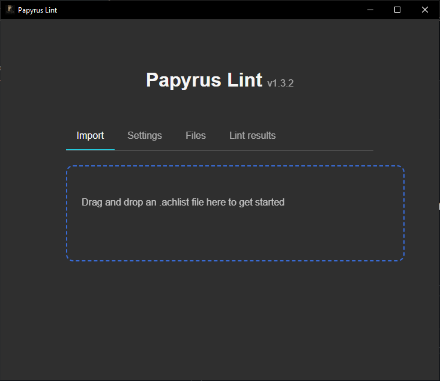
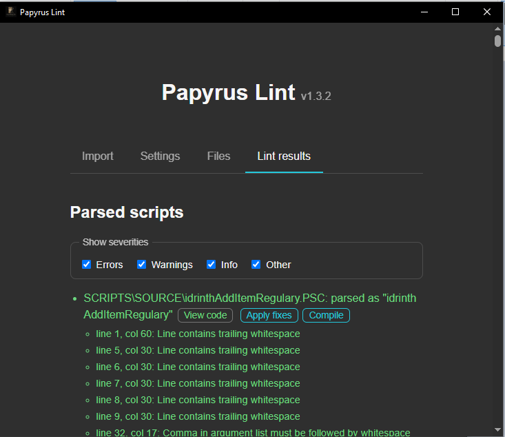
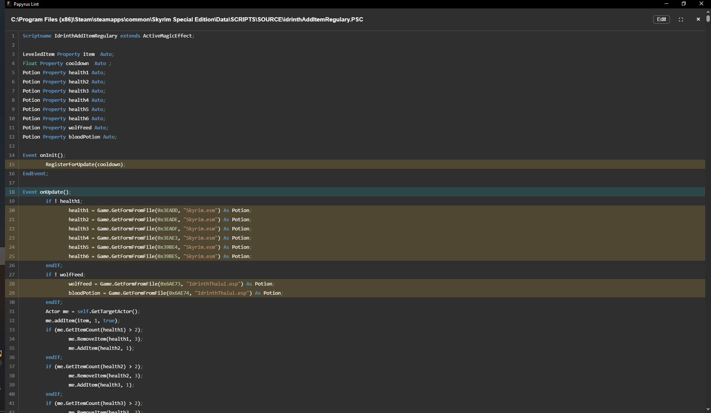
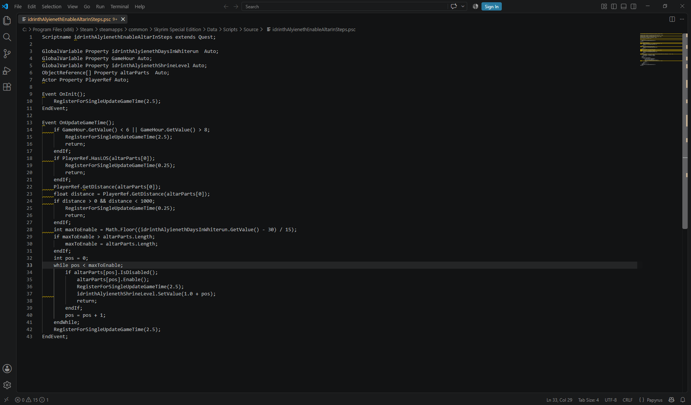
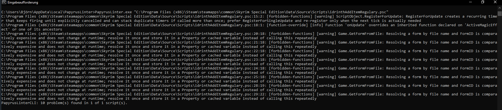

Papyrus Lint goes far beyond style
PapyrusCompiler.exe only checks that a script is syntactically valid — it will happily compile
a script that dereferences a None object at runtime, passes a String where an
Int is expected, returns the wrong type from a function, compares an Int to a
Float inexactly, or contains a branch that can never execute. Papyrus Lint performs deep
correctness, reliability, and performance checks across your .psc source, on top of the
formatting and style checks a linter usually provides — as a desktop app, a CLI, and editor extensions.
A simple example
This compiles cleanly, but silently passes the wrong argument:
Function DoSomething(Actor a, Actor b, Form SomeItem)
a.RemoveItem(SomeItem, 1, b);
EndFunctionFunction DoSomething(Actor a, Actor b, Form SomeItem)
a.RemoveItem(SomeItem, 1, false, b);
EndFunction
The Strict boolean check lint catches this: the first call passes the Actor
value b to a Bool parameter.
What is a linter?
A linter is a tool that scans source code for patterns that are likely to be mistakes, bad practice, or
inconsistent style, without actually running the code. It works from heuristics — recognizable patterns
known to often cause problems — rather than proving that a given line is definitely wrong. Because of that,
a linter can produce false positives. Treat every diagnostic as
advice, not a guaranteed defect report: use your own judgment, and use an
; @disable comment to silence a rule you've decided doesn't apply.
What this is NOT
A compiler (it uses the standard Papyrus compiler under the hood), an editor, a guarantee a script is fit for purpose, or a replacement for proper testing.
What this IS
A desktop app, standalone CLI, and editor extensions that all share one lint/repair engine, so a diagnostic looks and behaves the same everywhere you run it.
See it in action
Drop a .achlist, a single .psc file, or a folder to scan recursively, to get started.






Implemented lints
Every rule works from raw source or lexer tokens rather than requiring a script that parses cleanly. The tables below are generated directly from the README at deploy time, so they always match its documented behavior.
Formatting
Performance
Reliability
Bugprone
Other
Add a trailing ; @disable <rule-id>[, <rule-id>...] comment to a line to suppress
diagnostics from those rules on that line only (e.g. action = 1 ; @disable float-to-int); a
bare ; @disable suppresses every rule on the line. A
; @disable-file <rule-id>[, <rule-id>...] comment does the same across the whole
file instead, no matter which line it's written on (e.g. ; @disable-file float-to-int). See
the README for
the full list of rule ids.
Command-line interface
Besides its GUI, Papyrus Lint runs non-interactively via a standalone PapyrusLinterCLI binary
(or the desktop app's own executable, launched with an .achlist/.psc path),
supporting automatic fixes and structured JSON output.
It exits 0 when nothing failing was found, 1 when something was, and
2 on a usage or I/O error — so it can gate a CI step on a clean lint run. The preferred way to
run it in CI is the
Papyrus Lint GitHub Action
(idrinth/papyrus-lint-action), which posts findings as inline PR review comments. See the
README for every flag.
Configuration
Lint/fix behavior is configured via an optional papyrus-lint.yaml (or .yml) file
at the project root — next to the .achlist, or two directories above a bare
.psc. Any key it omits falls back to its documented default. It controls formatting
(semicolons, indentation, casing), which rules are enabled, complexity thresholds, CLI failure levels, and
the compiler path — PapyrusLinterCLI init writes the full default file into a project with
none yet.
Editor integrations
The desktop app, CLI, and both editor extensions all use the same lint and repair engine, so a diagnostic matches wherever you run it.
SublimeLinter plugin
Runs PapyrusLinterCLI against a saved .psc and reports SublimeLinter diagnostics.
GitHub Action
Runs Papyrus Lint in CI and posts findings as inline review comments on pull requests.
Documentation
Reference material from the project's docs/ directory, published here as browsable pages
alongside their raw source on GitHub.
How to help
You can help the project by:
- Providing examples of false positives.
- Providing examples of false negatives.
- Giving feedback on the existing rules.
- Proposing new rules or adjustments to existing ones.
- Reviewing code.
- Writing code.
- Writing or suggesting tests.
- Sponsoring development.